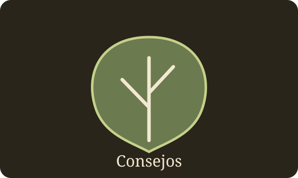

Tutorial
Qué necesitas
| Equipo | Para qué |
|---|
| Fermentador | Contener el mosto — vidrio, acero o plástico alimentario |
| Airlock | Deja salir el CO₂ sin dejar entrar aire ni contaminación |
| Densímetro | Medir la densidad antes y después — clave para el ABV real |
| Termómetro | La temperatura estable importa más que la exacta |
Los tres pilares
Miel: cuanto mejor sea, mejor tu hidromiel. Si está cristalizada, disuélvela al baño María.
Agua: mejor blanda y sin cloro.
Levadura: la miel es pobre en nitrógeno. Casi todas las recetas serias añaden rehidratante (Go-Ferm) al arrancar y nutrientes escalonados (Fermaid-K + DAP) durante los primeros días — no es opcional en mostos de alta densidad. Más abajo tienes el apartado completo de levaduras.
Proporción miel / agua
| Miel por litro | Resultado aprox. |
|---|
| 100–150 g | Muy ligero y seco, pocos grados |
| 250 g (1:3) | Punto de partida clásico — seco/semiseco, ~10% ABV |
| 350–400 g | Más cuerpo y dulzor, 12–13% ABV |
| 500 g (1:2) | Dulce y fuerte, 10–11% ABV con azúcar residual |
La levadura necesita al menos un 20% de agua en la mezcla para arrancar bien.
Paso a paso
1Preparar la miel
Si está cristalizada, licúala al baño María. Calentar la miel es opcional y puede restarle aroma. Muchos elaboradores solo la disuelven en agua templada.
2Mezclar y medir
Disuelve la miel en agua tibia y toma la densidad inicial (OG) con el densímetro. Es tu referencia para calcular el ABV final.
3Enfriar
Baja la temperatura del mosto a 18–25 °C antes de añadir la levadura. Añadirla en caliente la mata.
4Inocular la levadura
Rehidrata con un rehidratante nutricional, oxigena agitando el mosto y añádela. Cierra con el airlock.
5Fermentación primaria
2–4 semanas. Verás burbujeo y espuma — buena señal. Añade los nutrientes de forma escalonada, no todo de golpe. Temperatura estable, lejos de luz solar.
Plan B: Si a las 24-36 h no ves actividad, no reinocules todavía: comprueba temperatura, cierre del airlock y densidad. Si la densidad no baja, revisa la rehidratación y la ficha de la levadura antes de volver a inocular.
6Trasiego y clarificación
4–12 semanas. cuando la densidad se mantiene estable en varias lecturas separadas en el tiempo, separa el líquido claro del sedimento. Repite si hace falta.
7Embotellado y maduración
2 semanas a 2 años, en vidrio, lugar fresco y oscuro. Mejora con el tiempo — los especiados y más dulces necesitan más paciencia.
Levaduras y sus clases
La levadura decide más de lo que parece: tolerancia al alcohol, temperatura de trabajo y el aroma que deja atrás. Estas son las clases que te vas a encontrar:
Levaduras de vino (las más comunes en hidromiel)
Cepas de Saccharomyces cerevisiae seleccionadas para vino, muy fiables y con buena tolerancia al alcohol.
| Cepa | Tolerancia OH | Temp. | Aporta |
|---|
| Lalvin EC-1118 | hasta 18% | 10–30 °C | Neutra, muy resistente — ideal para arrancar fermentaciones difíciles o atascadas |
| Lalvin D-47 | hasta 14–15% | 15–20 °C | Floral y afrutada, notas cítricas — hidromiel seco y limpio |
| Lalvin 71B | hasta 14% | 18–30 °C | Suaviza la acidez, notas afrutadas — muy usada en melomel |
| Lalvin K1-V1116 | hasta 18% | 10–35 °C | Versátil, aromas florales frescos, buena para arranques difíciles |
| Lalvin QA23 | hasta 16% | 15–30 °C | Sabor limpio y afrutado, clarifica rápido |
Levaduras específicas de hidromiel
Comercializadas ya pensadas para aguamiel — buena opción si no quieres decidir entre cepas de vino.
| Ejemplo | Para qué |
|---|
| Mangrove Jack's M05 | De uso general, buena tolerancia, fermentación limpia |
| Fermentis Mead Yeast | Diseñada específicamente para mieles, fermentación previsible |
| SafMead Classic / Twist | Levaduras para hidromiel; sigue la ficha exacta de la variante |
Levaduras de cerveza (ale)
Menor tolerancia al alcohol (12–14% aprox.) pero aportan más ésteres frutales — dan hidromieles más rústicos y con carácter, sobre todo en melomel.
| Ejemplo | Tolerancia OH |
|---|
| Nottingham Ale | hasta 14% |
| US-05 / WB-06 | hasta 12% |
Regla práctica: si buscas seco y limpio, D-47 o QA23. Si el mosto es muy denso o quieres asegurar el arranque, EC-1118 o K1-V1116. Si haces melomel, 71B realza la fruta.

Consejos y trucos
Una guía práctica para tomar mejores decisiones durante todo el lote. Mide, anota y cambia una variable cada vez.
Antes de empezar
1. Prepara todo antes de abrir la miel
Limpia primero y desinfecta después con un producto apto para elaboración de bebidas, respetando dosis y tiempo de contacto. Ten a mano fermentador, airlock, densímetro, termómetro y libreta.
2. Comprueba el agua
Evita agua con olor o sabor fuerte a cloro. Si usas agua de red, consulta el tratamiento local; no des por hecho que hervirla resolverá todos los problemas. Usa agua potable.
3. La miel cristalizada sirve
La cristalización es natural. Si necesitas fluidificarla, calienta el recipiente suavemente al baño María; evita sobrecalentarla y nunca viertas miel caliente en un recipiente cerrado.
4. Deja espacio para la espuma
No llenes el fermentador hasta el borde. Deja espacio de cabeza y usa un recipiente adecuado al volumen para reducir desbordamientos durante la fermentación vigorosa.
5. Diseña un registro de lote
Apunta fecha, origen de la miel, volumen final, OG, levadura, temperatura, nutrientes añadidos, densidades sucesivas y cualquier cambio de aroma o aspecto. Los datos ayudan más que la memoria.
Durante la fermentación
6. La densidad manda; las burbujas no
El airlock puede dejar de burbujear por una fuga y puede burbujear por cambios de temperatura. Usa mediciones de densidad tomadas correctamente para evaluar la evolución.
7. Mantén la temperatura dentro del rango de la cepa
Sigue la ficha técnica de la levadura y evita cambios bruscos. Una temperatura demasiado alta puede generar aromas ásperos; demasiado baja puede ralentizar o detener la fermentación.
8. Nutrientes: dosis calculada, no a ojo
La miel suele ser pobre en nutrientes para la levadura, pero cada producto tiene composición y dosis propias. Calcula según volumen, densidad y etiqueta; no añadas DAP o nutrientes indiscriminadamente, especialmente al final de la fermentación.
9. Oxígeno solo cuando corresponde
La aireación puede ser útil al inicio, según el método y la receta. Una vez avanzada la fermentación, evita salpicaduras y entradas de aire para reducir la oxidación.
10. No abras el fermentador por curiosidad
Cada apertura aumenta el riesgo de contaminación y oxidación. Planifica mediciones y adiciones para hacerlas con higiene y en el menor número de intervenciones razonable.
11. No rellenes el airlock con cualquier líquido
Usa el líquido recomendado por el fabricante del airlock, mantén su nivel correcto y comprueba que no está obstruido. Nunca cierres herméticamente un recipiente que esté produciendo CO₂.
Errores comunes y cómo actuar
No se aprecia actividad al principio
No inocules de nuevo solo porque no haya burbujas. Comprueba la temperatura, el cierre, la fecha de inoculación y la densidad. Si la densidad no cambia tras un periodo razonable, revisa la rehidratación y la ficha de la levadura antes de corregir.
Aparece olor a azufre o huevo
Puede relacionarse con estrés de la levadura, nutrientes u otras causas. Registra el momento y la evolución; revisa el plan nutricional y la fase de fermentación. No añadas nutrientes a ciegas ni agites violentamente. Si el olor persiste o hay señales de deterioro, busca orientación especializada.
Sabe alcohólico o áspero
La maduración puede suavizar algunos perfiles, pero no arregla todos los defectos. Mantén el lote protegido de oxígeno y calor y vuelve a catar con el tiempo, anotando los cambios.
Está turbio
La turbidez puede deberse a levadura en suspensión, pectinas o partículas. Dale tiempo para sedimentar y evita trasiegos innecesarios. En recetas con fruta, consulta opciones enológicas adecuadas para ese caso.
Tiene película, moho visible o un olor claramente putrefacto
No pruebes el lote para comprobarlo. Aísla el recipiente y valora desecharlo de forma segura; revisa equipo, higiene y manipulación antes del siguiente lote. Una película no permite diagnosticar con certeza la causa solo por su aspecto.
La densidad se estanca antes de lo esperado
Comprueba primero el instrumento, la temperatura y que las lecturas sean comparables. Revisa la tolerancia de la levadura, la densidad inicial y la temperatura del lote. Evita añadir azúcar o más levadura sin un diagnóstico.
Trasiego, clarificación y embotellado
12. Trasiega solo cuando aporte algo
Trasiegos repetidos pueden oxidar y quitar aroma. Usa sifón limpio y desinfectado, evita salpicar y deja el sedimento atrás. No hace falta trasvasar solo porque haya pasado cierto número de días.
13. Confirma la estabilidad de la densidad
Toma varias lecturas separadas en el tiempo y confirma que son estables antes de embotellar. El calendario y la ausencia de burbujas no garantizan que la fermentación haya terminado.
14. Cuidado al endulzar después de fermentar
Añadir miel o azúcar fermentable puede reactivar la levadura y generar presión peligrosa en la botella. Utiliza un método validado de estabilización o una estrategia de envasado adecuada; no confíes solo en el frío o en que el hidromiel esté claro.
15. Botellas y cierres adecuados
Usa envases aptos para la bebida y para la presión prevista. No reutilices botellas decorativas o de vidrio fino para bebidas que puedan refermentar. Guarda las botellas de forma segura y revisa cualquier señal de sobrepresión.
16. Madura en un lugar fresco y oscuro
Evita la luz solar y las temperaturas elevadas. Cata pequeñas muestras a intervalos y registra cómo cambia el aroma, el equilibrio y la sensación alcohólica.
Pequeños trucos que mejoran los resultados
Haz lotes pequeños de prueba
Antes de añadir especias, café, cacao, roble o fruta a todo el lote, prueba la cantidad en una muestra medida. Escala solo después de catar y anotar el resultado.
Añade especias poco a poco
Las especias pueden dominar con rapidez. Usa ingredientes limpios, registra cantidad y tiempo de contacto, y prueba periódicamente para retirarlos cuando el perfil sea el deseado.
Protege el aroma de la miel
Evita hervir la miel sin necesidad. Un calentamiento excesivo puede cambiar el aroma; para disolverla suele bastar mezclar con agua potable templada.
No cambies muchas cosas a la vez
Si cambias levadura, temperatura, nutrición y proporción de miel al mismo tiempo, será difícil saber qué influyó. Modifica una variable por lote y compara los registros.
Prueba a ciegas y compara
Si tienes varios lotes, etiqueta las muestras con códigos y cátalas en condiciones parecidas. Anota aroma, acidez, dulzor, cuerpo y final sin mirar la etiqueta hasta terminar.
Regla de seguridad: no embotelles una fermentación activa, no añadas nutrientes sin calcular la dosis y no pruebes un lote con moho visible o signos claros de deterioro.
Glosario
- OG
- Densidad del mosto antes de fermentar (Original Gravity).
- SG
- Densidad al terminar la fermentación.
- ABV
- Grado alcohólico por volumen.
- Airlock
- Válvula que deja salir CO₂ sin dejar entrar aire.
- Trasiego
- Trasladar el líquido claro a otro recipiente, dejando el sedimento atrás.
- Melomel
- Hidromiel con fruta.
- Metheglin
- Hidromiel con especias o hierbas.
- Sack mead
- Hidromiel tradicional, dulce y de crianza larga.